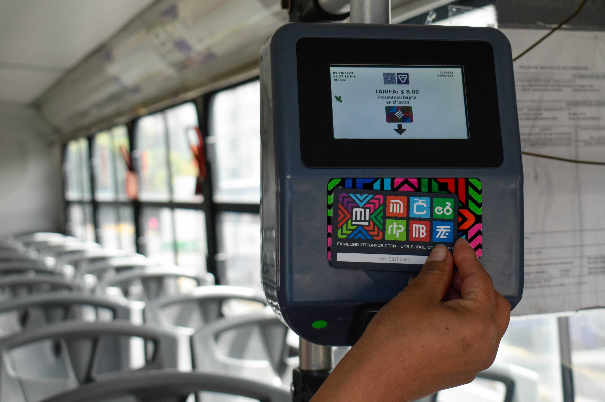
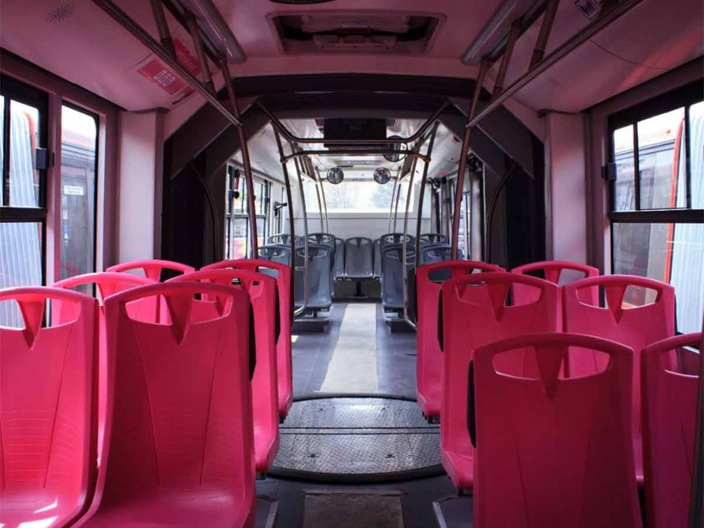
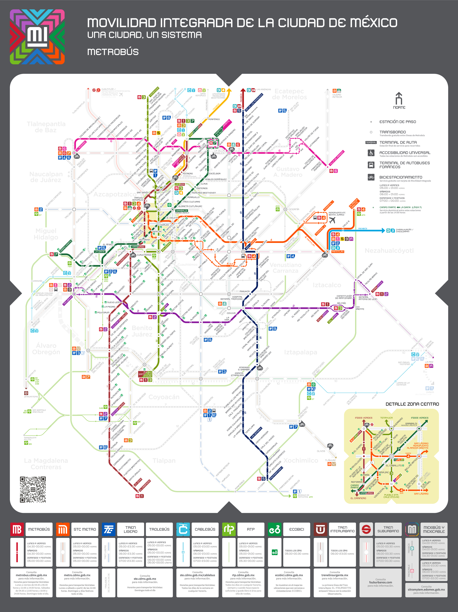
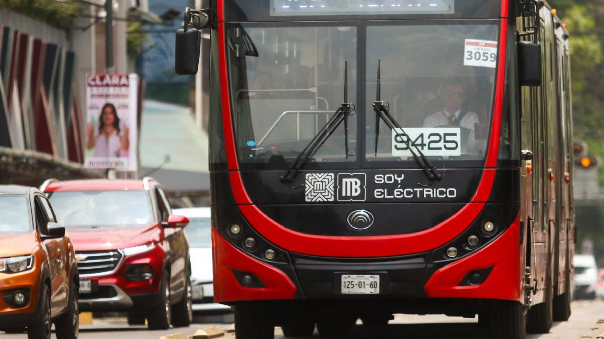

Transporte público
Metrobus
El Metrobús es un sistema de autobús de tránsito rápido en la Ciudad de México. Su planeación, control y administración están a cargo del organismo público descentralizado Metrobús.
Costos
El Metrobús de la CDMX cuesta $6 MXN por viaje en todas sus líneas (1, 2, 3, 5, 6 y 7), excepto en la Línea 4 hacia el Aeropuerto, donde el pasaje es de $30 MXN; los transbordos entre líneas son gratuitos si se hacen dentro de dos horas y en la misma dirección, y el pago se realiza principalmente con la Tarjeta de Movilidad Integrada, aunque también se aceptan tarjetas bancarias sin contacto y apps móviles.
Comodidad
El Metrobús en la CDMX ofrece una opción de transporte rápida y relativamente cómoda frente al tráfico de superficie, ya que circula por carriles exclusivos que reducen los tiempos de traslado.
Sus unidades son articuladas y de gran capacidad, cuentan con espacios para personas con discapacidad, áreas preferentes y en varias líneas tienen aire acondicionado, lo que mejora la experiencia del viaje.
Aunque en horas pico puede saturarse, sigue siendo una alternativa eficiente y accesible para moverse por la ciudad con mayor orden y seguridad que otros medios de transporte público.
Rutas
El Metrobús de la CDMX cuenta con 7 líneas que recorren gran parte de la ciudad y conectan zonas clave como el norte, sur, oriente y poniente.
Estas rutas atraviesan principales avenidas como Insurgentes, Eje 4 Sur, Eje 3 Oriente, Reforma y Circuito Interior, facilitando el acceso a puntos estratégicos como el Centro Histórico, Polanco, Santa Fe, Indios Verdes, Xochimilco y el Aeropuerto Internacional.
Gracias a su red integrada, permite combinar trayectos con el Metro, Trolebús y Cablebús, convirtiéndose en un sistema que une diferentes zonas urbanas y agiliza los desplazamientos diarios de millones de usuarios.
Tiempo
El Metrobús de la CDMX ofrece tiempos de traslado más cortos en comparación con otros transportes de superficie, ya que circula por carriles confinados que evitan gran parte del tráfico.
En promedio, los intervalos entre unidades son de 2 a 5 minutos en horas pico y de 6 a 10 minutos en horarios valle, lo que brinda una frecuencia constante.
Los recorridos pueden variar según la línea, pero en trayectos largos como de Indios Verdes a El Caminero (Línea 1), el viaje completo toma alrededor de 1 hora y 20 minutos, mientras que tramos más cortos pueden resolverse en 15 a 30 minutos. Esto lo convierte en una alternativa confiable y predecible para los traslados diarios.